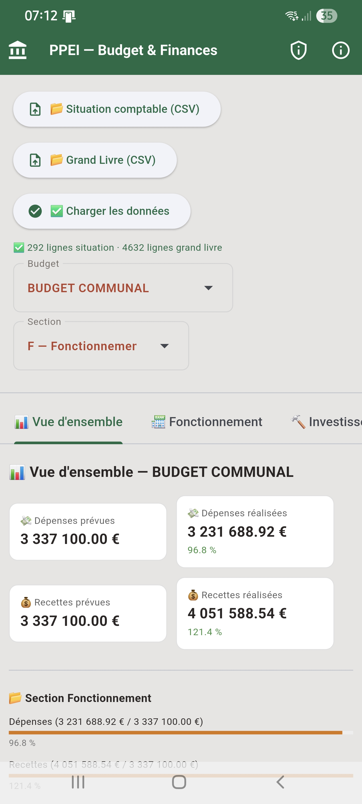
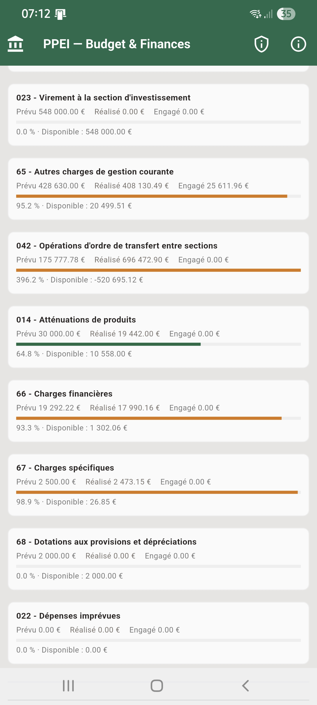
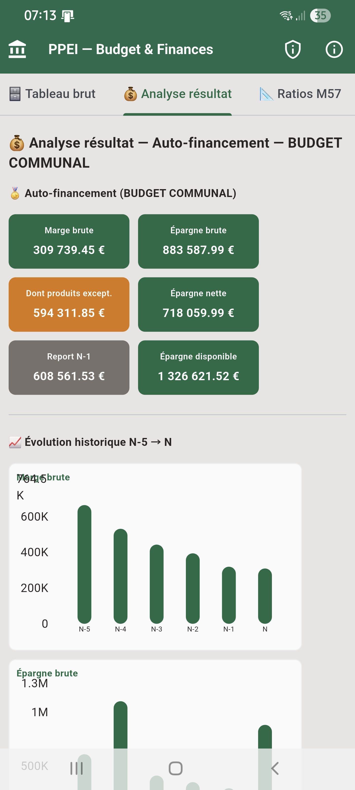

Fonctionnalités
- 9 volets d'analyse couvrant l'ensemble du compte administratif M57
- 51 ratios financiers avec évolution N-5 → N
- Simulation de projection budgétaire bidirectionnelle (montant ↔ variation %)
- Traitement correct des spécificités M57 (chapitres 731, 68, 16...)
- Export PDF par volet (version Windows)
Disponibilité
| Plateforme | Statut |
|---|---|
| Windows | Disponible (exécutable autonome) |
| Android | Disponible (version mobile simplifiée, sans export PDF) |
Générer vos fichiers CSV
PPEI-Budget & Finances fonctionne à partir de deux exports issus de votre logiciel de comptabilité publique (Berger-Levrault, Cosoluce/Cegid, Ciril Finances, JVS-Mairistem, Sword/Magnus, ou tout autre logiciel compatible M57/M14).
⚠️ Les noms de menus varient selon le logiciel et sa version. Cette page décrit la démarche générale et les points de vigilance ; en cas de doute, votre éditeur ou votre service comptable saura vous indiquer l'écran exact dans votre propre logiciel.
Les deux fichiers attendus
Situation.csv — état d'exécution budgétaire. C'est la restitution de synthèse qui présente, pour chaque ligne budgétaire (section, chapitre, compte), le prévu, le réalisé, le disponible et les restes à réaliser. C'est l'équivalent numérique de l'« état de la situation des crédits » ou « état d'exécution du budget ».
Sens;Section;Chapitre;Libellé_budget;Compte;Total_Prévu;Réalisé;__Réalisé_;
Disponible__réalisé_;__Dispo__réalisé_;Liquidé_N_1;Liquidé_N_2;Liquidé_N_3;
Liquidé_N_4;Liquidé_N_5;Dégagé;Engagé;Reste_engagéGrandLivre.csv — grand livre général. C'est le détail de toutes les écritures comptables de l'exercice, compte par compte : chaque ligne correspond à une opération (mandat, titre, engagement) avec sa date, son tiers, son montant et son imputation. C'est l'équivalent du « grand livre général » ou « grand livre des comptes ».
Sens;Compte;Exercice;Libellé_budget;Date;type;Objet;Série_de_bordereau;
N_Bordereau;N_Pièce;N_Engagement;Section;Chapitre;Imputation;Service;Tiers;
Total__R_V_;Engagé;Dégagé;Liquidé;Montant_HT;Montant_TVA_récupérable;
Montant_TTC;Réalisé;Réel_Ordre;Reste_engagéDémarche générale pour obtenir ces exports
- Se placer sur le bon exercice budgétaire avant l'export (l'exercice en cours ou l'exercice clos, selon votre besoin).
- Chercher, dans le menu Comptabilité / États / Éditions / Restitutions, les rapports intitulés « Situation budgétaire », « État d'exécution du budget » ou « État des crédits » pour
Situation.csv, et « Grand livre général », « Grand livre des comptes » ou « Grand livre par compte » pourGrandLivre.csv. - Lors de l'export, choisir le format CSV (parfois nommé « export tableur » ou « export Excel/CSV ») plutôt que PDF.
- Vérifier les paramètres d'export : encodage UTF-8 (certains logiciels exportent par défaut en ANSI/Windows-1252 — à changer si l'option existe), séparateur point-virgule (;), et inclure toutes les colonnes disponibles, y compris celles qui semblent redondantes.
Vérifier le fichier avant de l'importer
- Ouvrez le fichier avec un éditeur de texte ou LibreOffice Calc (évitez Excel pour une première vérification : il peut ré-encoder le fichier ou reformater les nombres à l'enregistrement).
- Vérifiez que la première ligne contient bien les en-têtes de colonnes, proches de ceux listés ci-dessus (les noms exacts peuvent varier légèrement selon le logiciel et sa version).
- Vérifiez que les montants utilisent la virgule comme séparateur décimal (format français), sans séparateur de milliers.
- Vérifiez qu'il n'y a pas de ligne de total ou de pied de page ajoutée automatiquement en fin de fichier.
En cas de colonnes manquantes ou différentes
Privilégiez toujours l'export le plus détaillé possible plutôt qu'une version résumée. Si certaines colonnes n'existent pas dans votre logiciel, l'application peut fonctionner en mode dégradé sur les analyses concernées — n'hésitez pas à signaler votre cas sur le dépôt GitHub du projet. Vous pouvez aussi contacter le support de votre éditeur en mentionnant que vous cherchez un « export CSV du grand livre général » et un « export CSV de la situation budgétaire/état d'exécution » : ce sont des restitutions standard que tous les logiciels de comptabilité publique proposent, même si l'intitulé exact diffère.
Ces fichiers contiennent des données comptables de votre collectivité (montants, tiers). PPEI-Budget & Finances les traite entièrement en local sur votre poste ou votre appareil : aucune donnée n'est envoyée sur un serveur externe.
Captures d'écran



)Remplacez chaque bloc pointillé par une balise <img> une fois vos captures d'écran ajoutées dans assets/screenshots/ — voir README.md.
Télécharger
Téléchargements pour PPEI-Budget & Finances :